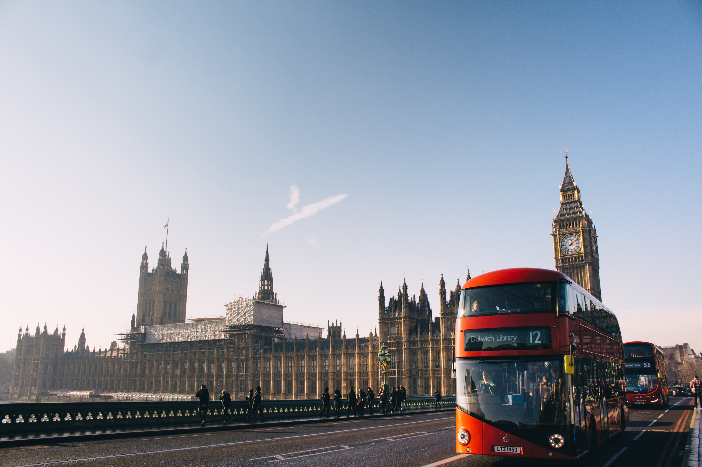

런던은 영국의 수도이자 최대 도시이다. 런던은 템스강을 기반으로 2,000년동안 발전해 왔으며 역사는 론디니움이라는 요새를 지은 때 부터 시작되었다. 런던에는 다양한 인종과 문화가 공존하고 있으며 런던 행정 구역안에서 300개 이상의 언어가 사용되고 있다.런던 시민들은 목재 대신, 돌과 벽돌 등을 이용하여 도시를 재건하였다. 새 도시의 건축인은 크리스토퍼 렌 경이었다. 그는 화재로 인하여 파괴된 많은 건물들을 재건하였다. 많은 상인들도 웨스트 엔드로 옮겨갔다. 런던의 비지니스들은 곧 회복되었다. 
18세기 이후 산업혁명기를 거치며 급속히 성장했으며, 1800년에는 인구가 대략 1,000,000명이었다. 1800년대에는 런던이 세계에서 가장 큰 도시로 알려졌다. 산업혁명기동안의 런던의 주요 역할은 공업 제품을 파는 시장들을 발달시키는 것이었다. 도시의 상인들과 은행가들은 막대한 행운을 만들었다. 부자인 런던 시민들은 도시에서 돈을 벌기는 하나, 웨스트 엔드 지역에서 시간을 보냈다. 1800년대 중반에는 웨스트 엔드는 유행적인 사회 생활지역으로 유명해졌다. 산업혁명은 런던에 번영은 물론 고통을 끼치기도 하였다. 교통의 발달과 함께, 외곽의 번영이 시작되었다.1750년에는 웨스트민스터 다리가 세워졌고, 그 후에 수많은 다리들이 세워졌다. 19세기에는 마차가 도시의 중요한 교통 수단이었고, 1800년대 중반에는 철도 서비스가 급격히 발달되었다. 런던 정부의 첫 개혁은 1888년에 세워졌다. 그레이터런던이 그해에 성립되었고, 다음 해에 28개의 자치구가 생겼다.